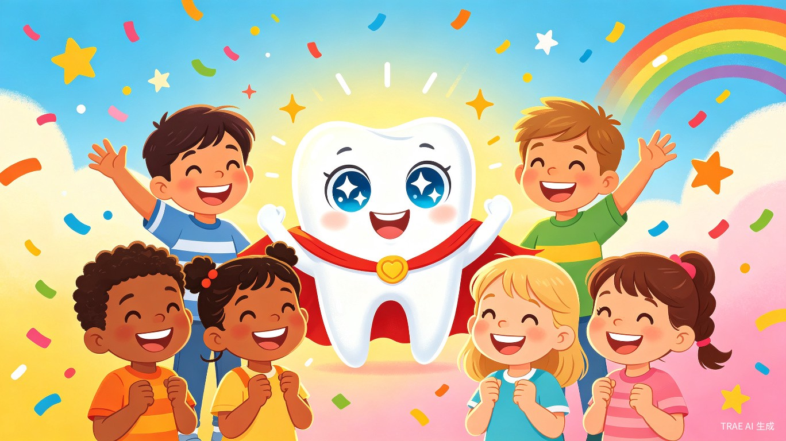
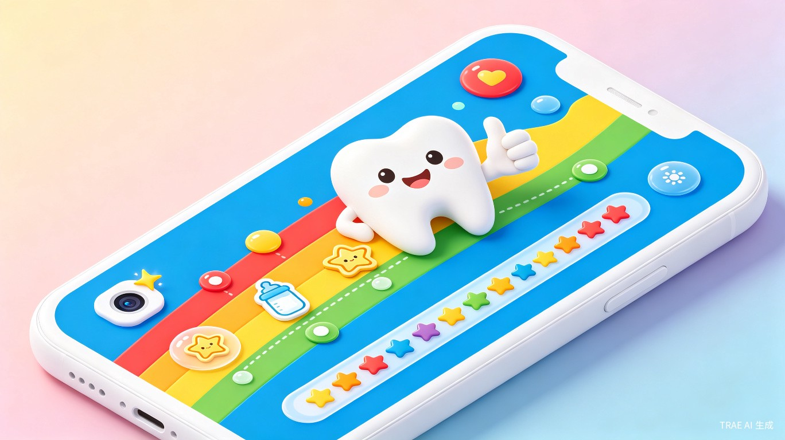
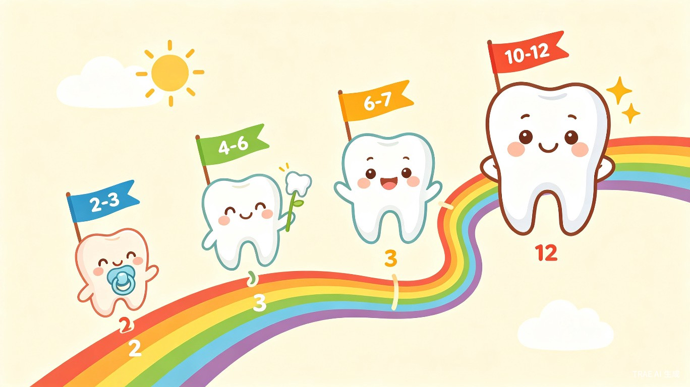
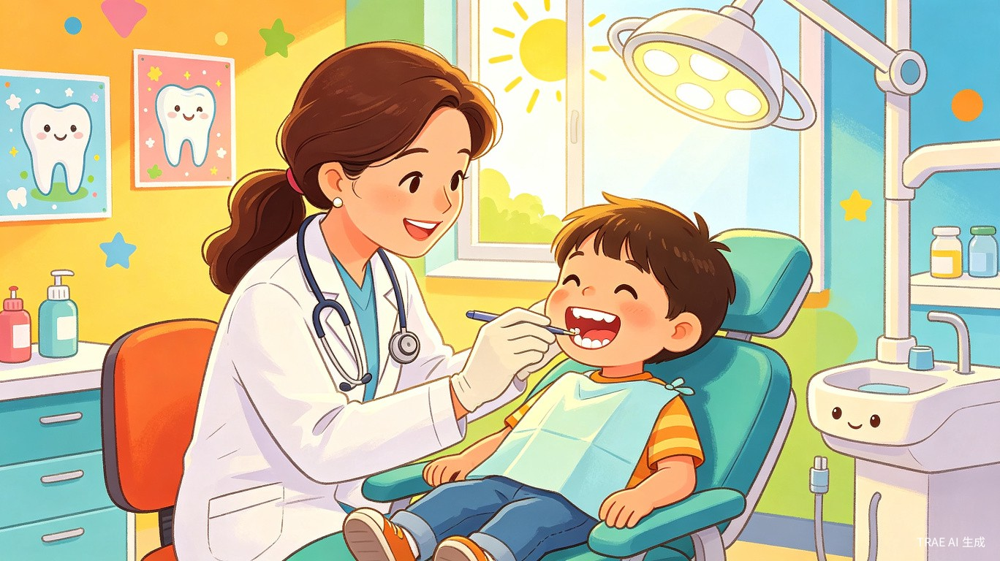

创作者：口腔副主任医师 / 副教授
从业二十余年，专注儿童口腔临床与教学，深知每一位家长在宝宝换牙期的焦虑与困惑。希望用 AI 的力量，把诊室里的专业指导变成每个家庭口袋里的贴心助手。
一、创意介绍
1.1 我们要解决什么问题？
中国有超过 2.3 亿 名 2-12 岁的小朋友，正处在乳牙萌出到恒牙替换的奇妙旅程中！可是，大多数爸爸妈妈对"小牙齿什么时候长？""什么时候换？""换牙要注意什么？"这些问题一头雾水，往往等宝贝牙疼得哇哇大哭才急急忙忙跑去看牙医，错过了最好的保护时机。
你知道吗？我国 5 岁小朋友的乳牙患龋率高达 70.9%，12 岁的恒牙患龋率也有 34.5%，而真正去治疗的比例还不到 20%！这些数字背后，是无数小朋友本可以避免的牙痛。
1.2 为什么一位口腔副主任医师要做这个？
在我的门诊里，几乎每天都在上演这样的场景——家长带着满脸泪花的孩子冲进来，乳牙已经烂得不成样子，甚至影响到了还没长出来的恒牙。家长们总是焦急地问："医生，这颗牙怎么突然就坏了？""新牙怎么长歪了？""孩子说牙疼是不是正常的？"
这些问题，如果家长能提前知道答案，90% 的痛苦都可以避免。所以我想：为什么不把诊室里的专业知识，变成一个每个家庭都能轻松使用的智能小助手呢？
1.3 乳牙不是"迟早要换的，坏了无所谓"！
这是我作为口腔科医生最痛心的一句话——"乳牙迟早要换，坏了不用管"。这个误区害了太多孩子！
乳牙龋坏如果不及时治疗，会带来一系列连锁反应：
影响恒牙发育
乳牙根尖炎症会直接波及下方正在发育的恒牙胚，导致恒牙长出来就有缺陷——釉质发育不良、变色、甚至无法正常萌出
导致恒牙排列紊乱
乳牙过早缺失，旁边的牙齿会"挤过来"占位置，等恒牙要长出来时发现"座位"没了，只能歪着长、错位长，甚至长不出来
影响面型和颌骨发育
乳牙龋坏严重时孩子会偏侧咀嚼，长期只用一边吃饭，会导致面部不对称——一边大一边小，也就是"大小脸"，这种影响是不可逆的
影响发音和心理健康
前牙龋坏或早失会影响孩子发音（尤其是唇齿音和舌齿音），还可能导致孩子自卑、不敢张嘴笑，影响社交和性格发展
划重点：乳牙虽然"迟早要换"，但它承担着维持间隙、引导恒牙萌出、促进颌骨发育、辅助发音咀嚼等重要使命。乳牙坏了不治，恒牙遭殃一辈子。
1.4 「小牙卫士」是什么？
「小牙卫士」是一款专门为 2-12 岁小朋友家庭设计的微信小程序。它就像一位住在你手机里的"牙齿小管家"，帮你追踪宝宝的每一颗小牙齿、科普换牙知识、拍照评估口腔状况、提醒什么时候该看牙医。

二、谁在用？解决什么烦恼？
2.1 为什么要关注这个问题？
2.2 什么时候会用到它？
日常刷牙时光
每天帮宝宝刷牙时，打开看看这个年龄段要注意什么，顺便学一招护牙小妙招
换牙关键期
宝宝 6 岁左右开始换牙啦！追踪每一颗小牙齿的"退休"和"新同事报到"进度
发现小异常
觉得宝宝牙齿好像有点不对劲？拍张照上传，AI 秒速评估，告诉你该不该去看牙医
要不要看牙医？
不用纠结！系统会告诉你紧急程度，还能帮你找到最近的儿童口腔科诊所
2.3 爸爸妈妈们的四大烦恼
知识到处找，越找越迷糊：百度、朋友圈、短视频……信息满天飞，到底哪个靠谱？拼拼凑凑也凑不出个完整体系
看着不对劲，但说不上来：乳牙该掉不掉？新牙长歪了？牙齿上有小黑点？肉眼实在看不出来到底严不严重
拖一拖就晚了：总觉得"等换牙就好了"，结果小洞变大洞，小问题拖成大麻烦，治疗更痛苦、费用更高
每个宝宝不一样：邻居家宝宝 5 岁就开始换牙了，我家 7 岁还没动静，正常吗？通用科普根本回答不了
三、小牙卫士的超级本领

3.1 智能换牙时间线 — 每颗牙的"成长日记"
输入宝宝的出生日期，系统就会自动生成一条专属的"牙齿成长时间线"！从第一颗乳牙冒出小脑袋，到最后一颗恒牙安家落户，每颗牙什么时候来、什么时候走，一目了然。
🔵 2-3 岁 · 乳牙宝宝"全员到齐"
20 颗小乳牙全部报到完毕！这个阶段重点是：学会正确刷牙、睡前不吃甜食、定期涂氟给小牙齿穿上"保护衣"。
🟣 4-5 岁 · 乳牙宝宝"站岗值守"
乳牙列稳定，但龋齿最容易找上门！重点是：控制甜食零食、培养宝宝自己刷牙的好习惯、准备迎接第一恒磨牙的窝沟封闭。
🔴 6-7 岁 · 换牙大戏"正式开场"
下门牙最先"退休"，六龄齿悄悄"上岗"！重点是：六龄齿窝沟封闭（这颗牙不替换，要陪伴一辈子！）、引导乳牙自然脱落、纠正咬唇吐舌等坏习惯。
🟡 8-9 岁 · 换牙"高峰期"
侧切牙、尖牙接力替换，新牙老牙"大换班"！重点是：关注牙列是否整齐、发现不齐的早期信号、必要时做正畸评估。
🟢 10-12 岁 · 恒牙列"大功告成"
前磨牙、第二磨牙陆续到位，换牙接近尾声！重点是：第二磨牙窝沟封闭、关注青少年牙周健康、定期专业检查。
3.2 AI 口腔拍照评估 — 手机变"牙齿放大镜"
用手机拍一张宝宝口腔的照片上传，AI 就会像一位经验丰富的牙医一样，帮你"看"出问题：
龋齿小侦探
发现牙齿上的白斑、褐色小点、小黑洞……这些龋齿的"早期信号"一个都逃不掉
萌出位置检查
新牙是不是长在该长的位置？老牙是不是赖着不走？异位萌出一目了然
排列整齐度评估
牙齿挤不挤？咬合对不对？初步判断是否需要正畸介入
牙龈健康检查
牙龈红不红？肿不肿？出不出血？炎症信号及时捕捉
温馨提醒：AI 评估是给家长的"参考小助手"，不能替代真正的牙医诊断哦！如果 AI 说"建议去看牙医"，系统会帮你推荐附近的儿童口腔科，并告诉你紧急程度。
3.3 牙医介入提醒 — 该看牙医时不会忘
根据宝宝的年龄和 AI 评估结果，系统会聪明地推送个性化提醒：
- 📅 按年龄段自动提醒：这个月该做什么检查了
- 🚨 AI 发现异常时：即时推送就医建议，标注紧急等级（正常关注 / 两周内就诊 / 尽快就诊）
- 📸 定期提醒：该给宝宝拍张口腔照片做对比了
- 🏥 诊所推荐：附近有哪些靠谱的儿童口腔科，一键预约
3.4 趣味科普与互动 — 换牙也能很好玩
让宝宝在快乐中学会保护牙齿：
- 🎬 3D 动画科普：看牙齿是怎么"退休"和"新同事报到"的，生动又好懂
- 💡 每日护牙小贴士：根据宝宝当前年龄段，每天推送一条实用小知识
- ⭐ 刷牙打卡挑战：早晚刷牙打卡，连续打卡赢取"护牙小勇士"徽章
- ❓ 牙医问答：由专业牙医团队编写的换牙期 Q&A，覆盖 90% 以上常见问题
3.5 换牙期饮食与习惯指导 — 吃对食物，养成好习惯
很多家长不知道，换牙期吃什么、怎么嚼，会直接影响孩子的面型和口腔健康。「小牙卫士」会提供个性化的饮食和习惯指导：
饮食红绿灯
根据宝宝年龄段推荐"该多吃什么""该少吃什么"，还有换牙期专属食谱建议
咀嚼习惯训练
提醒家长关注孩子是否双侧交替咀嚼，纠正偏侧咀嚼等不良习惯
不良习惯筛查
定期引导家长自查：孩子有没有吮指、咬唇、口呼吸、吐舌等习惯，早发现早纠正
面型发育关注
指导家长观察孩子的面部对称性、下巴位置，发现异常及时提醒就医评估
四、换牙期吃什么？怎么吃？
乳恒牙交替期（约 6-12 岁）是孩子颌骨发育、牙弓成形的关键窗口。这几年吃什么、怎么嚼、有哪些习惯，会直接影响孩子一生的面型、咬合和口腔健康。
4.1 换牙期饮食红绿灯
| 类别 | 推荐食物 | 为什么好 | 要少吃的 | 为什么不好 |
|---|---|---|---|---|
| 🟢 多吃 | 苹果、胡萝卜、芹菜、坚果 | 富含纤维，天然"牙齿清洁器"，咀嚼时刺激颌骨发育 | — | — |
| 🟢 多吃 | 牛奶、奶酪、豆制品、小鱼干 | 富含钙和磷，是恒牙发育的"建筑材料" | — | — |
| 🟢 多吃 | 瘦肉、鸡蛋、深海鱼 | 优质蛋白质 + 维生素 D，帮助钙吸收 | — | — |
| 🟡 适量 | 米饭、面条、馒头 | 主食适量即可，精细碳水吃太多不利于咀嚼锻炼 | — | — |
| 🔴 少吃 | — | — | 糖果、巧克力、碳酸饮料 | 糖分 + 酸性 = 龋齿的"最佳搭档"，碳酸饮料还会腐蚀牙釉质 |
| 🔴 少吃 | — | — | 粘性零食（牛轧糖、太妃糖） | 粘在牙齿上很难清理，持续产酸，龋齿风险极高 |
| 🔴 少吃 | — | — | 过软食物（果泥、粥、糊状食物） | 缺乏咀嚼刺激，颌骨发育不足，导致牙弓狭窄、牙齿排列拥挤 |
4.2 正确的咀嚼习惯 — "双侧交替"是金标准
双侧交替咀嚼
吃饭时左右两边轮流嚼，促进双侧颌骨均衡发育，面型才会对称美观
细嚼慢咽
每口饭嚼 20-30 下再咽，充分刺激颌骨生长，同时帮助消化吸收
多吃需用力嚼的食物
坚果、整颗苹果、玉米棒子……天然"颌骨健身房"，让牙弓有足够空间容纳恒牙
用吸管杯替代奶瓶
3 岁后应戒除奶瓶，长期用奶瓶喝奶（尤其含糖饮料）会导致"奶瓶龋"，前牙大面积龋坏
五、这些"小习惯"可能影响孩子一生
很多家长觉得孩子咬嘴唇、吃手指只是"小毛病，长大了自然就好了"。作为口腔科医生，我必须告诉你：不会自然好，只会越来越严重。在颌骨快速发育的换牙期，这些习惯的力量足以改变骨骼的生长方向。
吮指（3 岁以上仍持续）
导致前牙开颌（上下牙咬不上）、上前牙前突（"龅牙"）。手指长期压迫还会导致牙弓狭窄、腭盖高拱，影响面型美观和鼻腔呼吸。
咬唇（咬下唇最常见）
咬下唇会让上前牙往外推，形成"龅牙"面型；咬上唇则相反，下前牙前突形成"地包天"。两者都会导致面部不协调。
吐舌 / 伸舌吞咽
舌头持续顶在上下牙之间，造成前牙开颌——上下牙之间有缝隙，咬不断面条、啃不了苹果，发音也会受影响（"大舌头"）。
口呼吸（张嘴睡觉）
长期口呼吸会导致"腺样体面型"——下巴后缩、面部狭长、嘴唇外翻、眼神呆滞。这是近年来儿童正畸领域最关注的问题之一。
偏侧咀嚼（只用一边吃饭）
常用的一侧颌骨发达、肌肉丰满，不用的一侧萎缩——形成明显的"大小脸"。同时不常用的一侧更容易积攒牙菌斑和牙结石。
咬异物（咬铅笔、咬指甲）
持续施加异常力量在牙齿上，导致牙齿移位、小范围开颌，还可能造成牙齿切缘磨损、甚至牙齿折断。
关键时间窗口：3-6 岁是纠正不良口腔习惯的黄金期，颌骨可塑性强，干预效果最好。等到 12 岁以后恒牙全部萌出，骨骼发育接近成熟，很多问题只能通过手术或复杂正畸才能解决，费用高、周期长、孩子也更痛苦。
六、宝宝换牙顺序一览表

下面这张表就是宝宝从小到大的"牙齿成长日历"啦！每个宝宝的节奏可能略有不同，如果跟表格差了超过半年，建议找牙医看看哦。
| 年龄段 | 牙齿类型 | 数量 | 家长要注意什么 |
|---|---|---|---|
| 6-8 个月 | 下颌乳中切牙（下门牙） | 2 颗 | 第一颗小乳牙冒出来啦！开始用纱布清洁 |
| 8-10 个月 | 上颌乳中切牙（上门牙） | 2 颗 | 可以用指套牙刷轻轻刷啦 |
| 9-13 个月 | 乳侧切牙 | 4 颗 | 出牙期宝宝会流口水、烦躁，多安抚 |
| 13-19 个月 | 第一乳磨牙 | 4 颗 | 开始用儿童牙刷，每天两次 |
| 16-23 个月 | 乳尖牙（虎牙） | 4 颗 | 注意纠正吮指、咬唇等不良习惯 |
| 23-33 个月 | 第二乳磨牙 | 4 颗 | 20 颗乳牙全部到齐！定期涂氟 |
| 6-7 岁 | 下门牙替换 + 六龄齿萌出 | 4 颗 | 六龄齿窝沟封闭！这颗牙不换的，要保护一辈子 |
| 7-8 岁 | 上门牙替换 | 2 颗 | 观察新牙位置是否正，有没有"双层牙" |
| 8-9 岁 | 侧切牙替换 | 4 颗 | 关注牙列间隙，发现不齐及时评估 |
| 9-11 岁 | 乳磨牙替换（前磨牙） | 8 颗 | 必要时做正畸评估 |
| 10-12 岁 | 虎牙替换 + 第二磨牙萌出 | 4+4 颗 | 第二磨牙窝沟封闭，恒牙列建成！ |
七、技术方案
微信小程序
原生框架 + WeUI 组件库，打开就能用，不用下载，爸爸妈妈和宝宝都方便
AI 视觉模型
深度学习口腔图像分析，训练数据来自专业牙科诊所的脱敏病例，越用越聪明
云服务
微信云托管，弹性扩缩容，不管多少家庭同时用都稳稳的
隐私保护
口腔照片端到端加密，只用于即时分析，不永久存储，保护宝宝隐私
开发工具：本项目全程使用 TRAE Work / TRAE IDE 进行创意梳理、方案设计和产品开发，充分借助 AI 辅助编程能力，让一位牙医也能做出专业的小程序！
八、为什么这件事值得做？
8.1 社会价值 — 让每个家庭都有"家庭牙医"
「小牙卫士」把专业的儿童口腔知识变成每个家庭都能看懂、用得上的智能工具，让口腔健康知识不再有门槛。通过 AI 评估和智能提醒，帮助家长在问题还很小的时候就采取行动，避免不可逆的损伤，真正提升中国宝宝的口腔健康水平。
8.2 效率提升 — 家长不慌，牙医不忙
家长不用再在海量信息里"大海捞针"，一个小程序就能获得专业、个性化的护牙指导。对牙医来说，家长上传的照片可以做初步筛查，把有限的门诊时间留给真正需要治疗的小朋友。
8.3 商业价值 — 可持续的好产品
以"工具 + 科普 + 服务"的模式，让用户真正离不开：
- 🏥 与儿童口腔诊所合作，提供在线预约和到店导流
- 🪥 精准推荐口腔护理产品（儿童牙刷、牙膏、牙线等）
- ⭐ 高级功能订阅（详细报告、专家在线咨询等）
- 🏫 与幼儿园、学校合作推广，形成 B2B2C 模式
九、小牙卫士成长计划
🔵 MVP 阶段（初赛 Demo）
实现核心功能：换牙时间线展示、口腔拍照上传与 AI 初步评估、基础科普内容。以可体验的 HTML Demo 形式提交，让大家先"玩"起来！
🟣 V1.0 阶段（复赛完整产品）
微信小程序完整上线：个性化时间线、AI 评估优化、牙医介入提醒、刷牙打卡、知识库完善。真正能用的产品！
🔴 V2.0 阶段（决赛迭代）
增加 3D 牙齿动画、多牙医专家在线咨询、社区互动功能、幼儿园/学校合作版本。越做越好玩，越做越强大！
十、参赛信息
参赛者身份
三甲医院口腔副主任医师 / 副教授，儿童口腔专科负责人，二十余年临床与教学经验
参赛赛道
生活娱乐赛道 — 用 AI 技术守护家庭健康生活，让每个宝宝的笑容都闪亮
创作工具
全程使用 TRAE Work / TRAE IDE 进行创意梳理、方案设计和产品开发
核心理念
专业牙医 + AI 技术 = 每个家庭都值得拥有的"口袋牙医"
